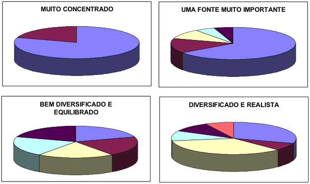
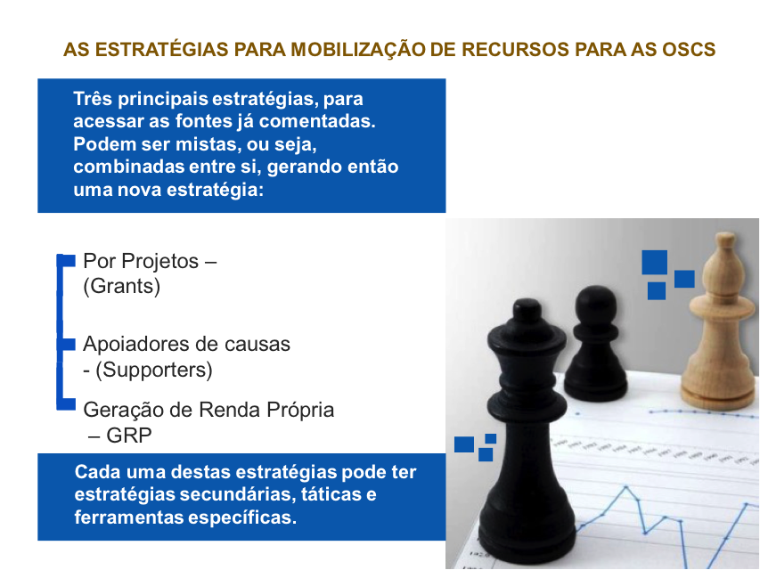
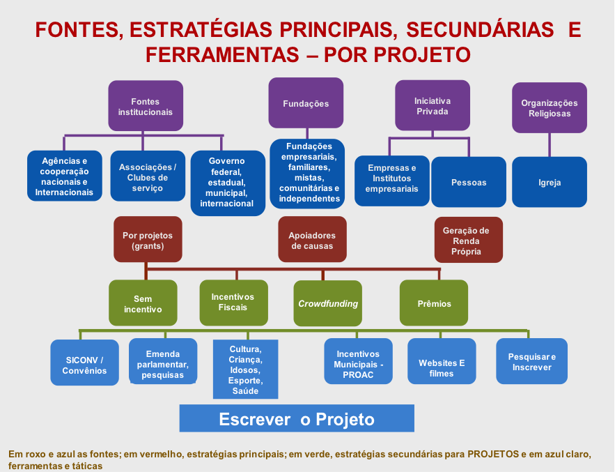
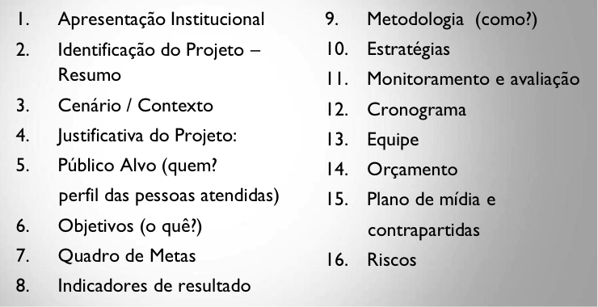

As Fontes e sua diversificação
20 de Fevereiro de 2017 às 07:00
Como visto nos artigos anteriores temos 4 fontes principais e diversas fontes secundárias. Para acessar estas fontes vimos no artigo 1 desta série a definição de estratégias, táticas e ferramentas. Vamos agora mostrar como elas estão relacionadas, começando com uma premissa que é a da diversificação de fontes e a sustentabilidade, relacionada à continuidade dos aspectos econômicos, sociais, culturais e ambientais para a atividade de uma iniciativa organizada.
No âmbito institucional, conforme ensina Domingos Armani, sociólogo e mestre em Ciência Política pela Universidade Federal do Rio Grande, “a sustentabilidade de uma organização é a sua capacidade para tornar duradouro o valor social de seu projeto político-institucional”.
Eis alguns aspectos fundamentais da sustentabilidade:
No âmbito institucional, conforme ensina Domingos Armani, sociólogo e mestre em Ciência Política pela Universidade Federal do Rio Grande, “a sustentabilidade de uma organização é a sua capacidade para tornar duradouro o valor social de seu projeto político-institucional”.
Eis alguns aspectos fundamentais da sustentabilidade:
- A sustentabilidade é multidimensional e não meramente financeira, embora tal aspecto seja fundamental.
- A sustentabilidade não é apenas uma capacidade interna da organização ou das atividades por ela realizadas, pois o que deve ser duradouro não é a organização em si, mas o valor social do que ela propõe e oferece concretamente.
- A sustentabilidade é uma busca incessante, nunca totalmente resolvida e assegurada.
Ainda que uma OSC tenha alguma experiência em mobilização de recursos com alguma fonte ou estratégica especifica como pessoas jurídicas ou eventos, ainda há uma trajetória importante a ser percorrida no sentido da busca de sua sustentabilidade financeira. Isso porque a diversificação colabora grandemente para a sustentação financeira das atividades institucionais, não sendo de forma alguma interessante que uma organização dependa demasiadamente de poucas fontes de recursos. Além de expandir as possibilidades de arrecadação, a diversificação de fontes contribui para o aumento do contato com diferentes públicos, ampliando o reconhecimento institucional em vários setores da sociedade e contribuindo para a legitimidade social.
| Uma iniciativa social que obtém recursos de diferentes fontes nacionais e internacionais, privadas e públicas, é, seguramente, uma iniciativa representativa, legítima e útil à sociedade.[1] |

Observe-se ainda, que, algumas fontes fornecem recursos rapidamente, enquanto, diante de outras, pode-se levar mais tempo para obter resultados. Por isso, ressalta-se que a diversificação das fontes de recursos é atividade de longo prazo e deve ser realizada de forma planejada, por meio de diferentes estratégias, sempre levando em consideração a redução dos riscos para a sustentabilidade das atividades sociais da OSC e a legitimidade social. Assim como Cruz e Estraviz não recomendamos que nenhuma fonte ou estratégia participe com mais de 1/3 da receita da OSC.
Como já vimos, estratégias para mobilização de recursos são “caminhos” ou trajetórias favoráveis para uma organização superar desafios, chegar às fontes de recursos e mobilizar os investimentos sociais necessários ao cumprimento de sua missão.
Dois são os aspectos mais importantes na escolha das estratégias:
- Buscar, entre as alternativas escolhidas, o equilíbrio entre o custo e o benefício para implementá-las.
- Estabelecer metas factíveis (o que significa dimensionar valores e fixar períodos de tempo adequados)

Iniciamos as estratégias apontando 3 estratégias principais que serão descritas em seguida e nos próximos artigos, bem como suas estratégias secundárias.
ESTRATÉGIA 1: MOBILIZAÇÃO DE RECURSOS POR MEIO DE PROJETOS

A escolha do edital, como meio para a seleção de projetos, acena para a busca da democratização do processo de captação de recursos para iniciativas socioambientais. Além disso, a opção pelo edital sinaliza a seriedade do investimento, já que a modalidade demanda um processo de seleção pública, igualitário e com regras bem definidas. Assim, o edital representa uma ferramenta que evoca transparência e democratização de oportunidades. Com isso, qualquer proponente, desde que alinhado ao foco do edital, pode participar com a segurança de que seu projeto será avaliado por uma comissão de especialistas idôneos de acordo com critérios, previamente anunciados.
No âmbito público, editais atuam principalmente para a reconfiguração e distribuição da riqueza, na medida em que objetivam a descentralização do investimento social. Nesse sentido, editais são formatos adequados para investimentos que desejam enfrentar as grandes desigualdades sociais e regionais no Brasil. Em termos de distribuição regional, os editais são mais equitativos e eficientes do que a demanda espontânea, proporcionando maior justiça na destinação aos estados, aos grupos e a temas tradicionalmente alijados dos processos de captação de recursos.
No âmbito privado, a adoção de editais profissionaliza o processo de seleção de projetos e atende as reais demandas da sociedade. Nesse sentido, o investimento social privado passa a ser definido não apenas com base em vínculos ou interesses de relacionamento da alta gestão. A seleção dos projetos passa pelo crivo de especialistas que levam em consideração a capacidade do proponente de planejar, executar e avaliar o projeto, agregando valor positivo à marca das empresas ao mesmo tempo em que atendem aos anseios da sociedade.
O novo marco legal (lei 13.019/14) também faz parte desta estratégia com a publicação dos termos de fomento e de colaboração nas três esferas do governo e que fazem parte de outros artigos já publicados.
Nesta estratégia principal também aparecem os projetos com incentivos fiscais federais, estaduais e municipais que demandariam um livro para explica-los. Recomendo a leitura do manual do patrocinador em http://www.manualdopatrocinador.com.br/ e a cartilha sobre o tema em: http://www.fecomercio.com.br/upload/_v1/2015-07-30/13544.pdf
O crowdfunding estratégia secundária dos grants e elaboração de projeto pode ser melhor entendida e aplicada lendo o manual do crowdfunding em https://juntoscomvc.wordpress.com/tag/manual-crowdfunding/xxxx
Michel Freller empreendedor social, palestrante, professor, consultor e facilitador. Mestre em Administração pela PUC-SP, atua junto as OSCs com ênfase em planejamento e mobilização de recursos com e sem incentivos. Fundador da Criando Consultoria ltda.
[1] Danilo Tiisel apud dissertação de mestrado Michel Freller em: https://sapientia.pucsp.br/bitstream/handle/1102/1/Michel%20Freller.pdf
Referências
ARMANI, Domingos Antônio. Sustentabilidade: desafio democrático. In: Secretaria de Vigilância em Saúde, Coordenação Nacional de DST e Aids. (Org.). Sustentabilidade: aids e sociedade civil em debate. Brasília: Ministério da Saúde, p. 9-14, 2004.
______ . O Sentido do planejamento na mobilização de recursos. In: Rogério Renato Silva; Paula Lubambo. (Org.). Mobilizar a experiência do programa de formação em mobilização de recursos da Aliança Interage. Recife: Aliança Interage, p. 71-74, 2008.
CRUZ, Célia; ESTRAVIZ, Marcelo. Captação de Diferentes Recursos para Organizações Sem Fins Lucrativos. São Paulo: Ed. Global e Fonte, 2000.
| Empresas com política de responsabilidade social, governos nacionais e internacionais, fundações e agências internacionais normalmente fazem seu investimento social ou aporte de recursos por meio da seleção de projetos via editais com ou sem incentivos fiscais. |
A escolha do edital, como meio para a seleção de projetos, acena para a busca da democratização do processo de captação de recursos para iniciativas socioambientais. Além disso, a opção pelo edital sinaliza a seriedade do investimento, já que a modalidade demanda um processo de seleção pública, igualitário e com regras bem definidas. Assim, o edital representa uma ferramenta que evoca transparência e democratização de oportunidades. Com isso, qualquer proponente, desde que alinhado ao foco do edital, pode participar com a segurança de que seu projeto será avaliado por uma comissão de especialistas idôneos de acordo com critérios, previamente anunciados.
No âmbito público, editais atuam principalmente para a reconfiguração e distribuição da riqueza, na medida em que objetivam a descentralização do investimento social. Nesse sentido, editais são formatos adequados para investimentos que desejam enfrentar as grandes desigualdades sociais e regionais no Brasil. Em termos de distribuição regional, os editais são mais equitativos e eficientes do que a demanda espontânea, proporcionando maior justiça na destinação aos estados, aos grupos e a temas tradicionalmente alijados dos processos de captação de recursos.
No âmbito privado, a adoção de editais profissionaliza o processo de seleção de projetos e atende as reais demandas da sociedade. Nesse sentido, o investimento social privado passa a ser definido não apenas com base em vínculos ou interesses de relacionamento da alta gestão. A seleção dos projetos passa pelo crivo de especialistas que levam em consideração a capacidade do proponente de planejar, executar e avaliar o projeto, agregando valor positivo à marca das empresas ao mesmo tempo em que atendem aos anseios da sociedade.
O novo marco legal (lei 13.019/14) também faz parte desta estratégia com a publicação dos termos de fomento e de colaboração nas três esferas do governo e que fazem parte de outros artigos já publicados.
Nesta estratégia principal também aparecem os projetos com incentivos fiscais federais, estaduais e municipais que demandariam um livro para explica-los. Recomendo a leitura do manual do patrocinador em http://www.manualdopatrocinador.com.br/ e a cartilha sobre o tema em: http://www.fecomercio.com.br/upload/_v1/2015-07-30/13544.pdf
O crowdfunding estratégia secundária dos grants e elaboração de projeto pode ser melhor entendida e aplicada lendo o manual do crowdfunding em https://juntoscomvc.wordpress.com/tag/manual-crowdfunding/xxxx
Já os prêmios podem ser uma estratégia de mobilização em dois tempos.
No primeiro escrevemos um projeto mostrando os nossos resultados e histórias de sucesso. Enviamos para os mais de 180 prêmios disponíveis para OSC. No segundo tempo, após ganharmos um prêmio, iremos ser mais visíveis e conhecidos e assim poderemos apresentar projetos em outros editais ou até sermos chamados por empresas para parcerias.
Em todos os casos desta estratégia principal o sucesso se dará por escrever bem (português impecável) um projeto em suas 16 partes (abaixo nomeadas) com orçamentos bem elaborados e contrapartidas equilibradas.
No primeiro escrevemos um projeto mostrando os nossos resultados e histórias de sucesso. Enviamos para os mais de 180 prêmios disponíveis para OSC. No segundo tempo, após ganharmos um prêmio, iremos ser mais visíveis e conhecidos e assim poderemos apresentar projetos em outros editais ou até sermos chamados por empresas para parcerias.
Em todos os casos desta estratégia principal o sucesso se dará por escrever bem (português impecável) um projeto em suas 16 partes (abaixo nomeadas) com orçamentos bem elaborados e contrapartidas equilibradas.

Michel Freller empreendedor social, palestrante, professor, consultor e facilitador. Mestre em Administração pela PUC-SP, atua junto as OSCs com ênfase em planejamento e mobilização de recursos com e sem incentivos. Fundador da Criando Consultoria ltda.
[1] Danilo Tiisel apud dissertação de mestrado Michel Freller em: https://sapientia.pucsp.br/bitstream/handle/1102/1/Michel%20Freller.pdf
Referências
ARMANI, Domingos Antônio. Sustentabilidade: desafio democrático. In: Secretaria de Vigilância em Saúde, Coordenação Nacional de DST e Aids. (Org.). Sustentabilidade: aids e sociedade civil em debate. Brasília: Ministério da Saúde, p. 9-14, 2004.
______ . O Sentido do planejamento na mobilização de recursos. In: Rogério Renato Silva; Paula Lubambo. (Org.). Mobilizar a experiência do programa de formação em mobilização de recursos da Aliança Interage. Recife: Aliança Interage, p. 71-74, 2008.
CRUZ, Célia; ESTRAVIZ, Marcelo. Captação de Diferentes Recursos para Organizações Sem Fins Lucrativos. São Paulo: Ed. Global e Fonte, 2000.
Publicado por

Notícias mais populares
Gestão
Em agosto de 2017, a revista ÉPOCA e o Instituto Doar divulgaram a primeira ediç&...
Contexto e tendências
Criado para tornar mais transparentes as parcerias entre a administração públic...
Profissional captador
A captação de recursos é fundamental para a sustentabilidade de uma organiza&cc...